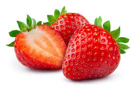

Atividade
Este site é parte da atividade proposta pelo professor Fábio. Será usado para treinar commits no Git.

Kiwi: Fruta verde com sementes pretas, sabor doce e ácido. Rica em vitamina C e antioxidantes.

Morango: Fruta vermelha, doce e rica em vitamina C. Ótima para vitaminas e sobremesas.

Melancia: Fruta verde com sementes pretas, sabor doce e ácido. Rica em vitamina C e antioxidantes.